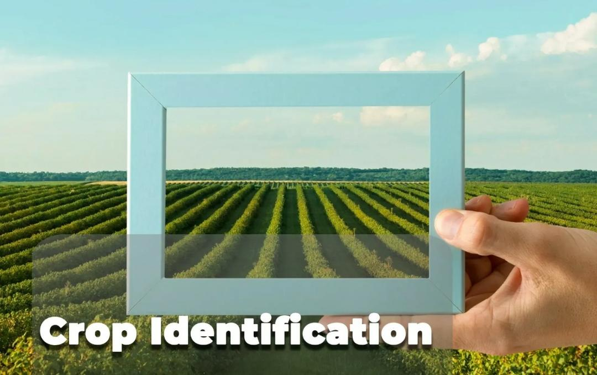
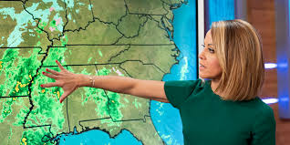

Smart support for better farming decisions
AgroCare
Identify crop issues, check weather, plan seasonal work, explore schemes, and get practical farming guidance in one place.
Today on the farm
Core tools
Everything a farmer needs to act faster

Crop Disease Identifier
Upload a crop photo and receive a quick health report with suggested next steps.
Chatbot
Ask questions about soil, fertilizer, water, diseases, weather, and farmer schemes.

Weather Updates
Search local weather conditions to plan sowing, spraying, irrigation, and harvest work.
Government Policies
Find useful scheme categories, documents to prepare, and application reminders.
Farm Learning Vlog
Browse short learning topics for soil care, pest control, water saving, and marketing.
About Us
Learn why AgroCare was built and how it supports practical farm decisions.
Feedback
Share what worked, what confused you, and what feature should come next.